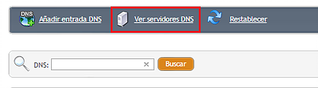
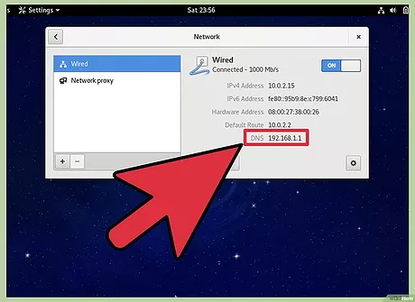

Sistema de nombres de dominio.
|
Comprobar dns es una manera de verificar los dns autoritativos de un dominio y una manera de comprobar si el servidor dns o servidores dns asignados a dicho dominio están resolviendo las consultas dns de forma correcta, es decir, revelando la dirección IP y también diversos tipos de registro dentro de la zona DNS del dominio. Al comprobar dns obtendrás toda esta información, pero principalmente sabrás si el servidor dns no responde o no está disponible en ese momento. Comprobar dns también es un método rápido y fácil para conocer los dns de un dominio y, en la mayoría de casos, al ver los dns, darte cuenta también quién es el proveedor de hosting o el servicio de hosting en el que se encuentra alojado u hospedado el dominio. |
 |
Verificar DNS |
|
|
Verificar dns consiste en comprobar si los dns asignados al dominio están activos y respondiendo
a las consultas de verificación de dns. Al verificar dns puedes saber si el dominio está
resolviendo correctamente y por tanto siendo dirigido hacia la dirección IP del servidor de
hosting donde se encuentra el sitio web de dicho dominio. Hay ocasiones en las que al verificar
dns puedes encontrarte con registros dns incorrectos, o que el servidor dns no responde, o que
la propagación dns está teniendo lugar y aún no se ha completado, o te aparece "servidor dns no
disponible", o incluso que el dominio ya no está registrado. |
 |